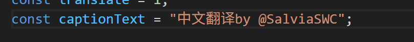

鼠尾草～🌿
@SalviaSWC
加入了captionText，大家可以按需更改。现在水印文本显示的是它，而不总是“中文翻译by @SalviaSWC”了🥺

鼠尾草～🌿
@SalviaSWC
应推u要求，出一期药物报告文字版&长图版制作教程🤓
这次是Erowid翻译脚本的，Reddit的翻译脚本也差不多，只是比这个脚本多几个参数。要是大家想用的话，窝野可以专门出一期Reddit翻译的哦🥺
脚本地址：https://t.co/hyfhbu7cP1（叠甲：仅供学习、研究用途，不建议任何人进行违反网站规定的行为） https://t.co/cmwzhrW26A